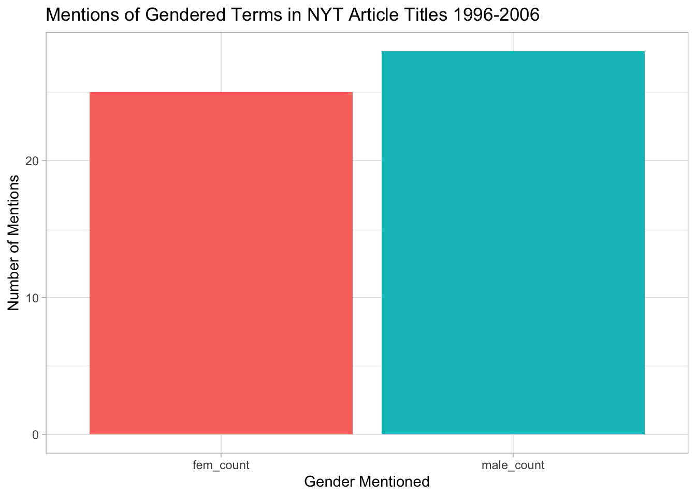
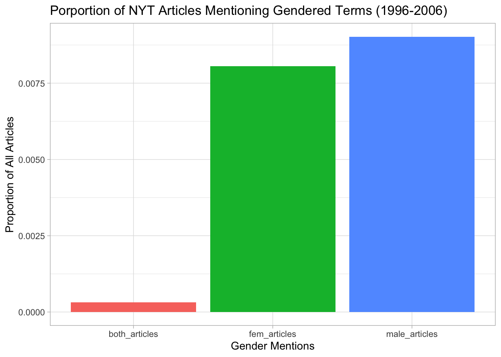

show code
library(tidyverse)
library(RTextTools)
data(NYTimes)
NYTimes <- NYTimes |>
mutate(
Title = as.character(Title),
Subject = as.character(Subject)
)The data set “NYTimes” is a sample collection of 3104 headlines from The New York Times, compiled by Professor Amber E. Boydstun at the University of California, Davis. The data set includes each headline’s date, title, manually classified subject, and topic code. The data set spans across 1996-2006, providing a glimpse into how The New York Times presented and categorized news stories.
Analysis 1: How Often Are Female and Male Terms Used in NYT Articles?
library(tidyverse)
library(RTextTools)
data(NYTimes)
NYTimes <- NYTimes |>
mutate(
Title = as.character(Title),
Subject = as.character(Subject)
)Tibble below counts the number of times female terms or male terms are found in the data set’s headlines:
nyt_obj <- NYTimes |>
select(Date, Title, Subject) |>
filter(!is.na(Title)) |>
mutate(
title_subj = str_to_lower(str_c(Title, Subject, sep = " "))
)
fem_names <- "\\b(woman | women | girl | girls | female | females)\\b"
male_names <- "\\b(men | man | males | males | boy | boys)\\b"
nyt_obj <- nyt_obj |>
mutate(
fem_mentioned = str_detect(title_subj, fem_names) ,
male_mentioned = str_detect(title_subj, male_names)
)
counts_mentions <- nyt_obj |>
summarise(
fem_count = sum(fem_mentioned),
male_count = sum(male_mentioned)
) |>
pivot_longer(cols = everything(),
names_to = "gender",
values_to = "count"
)
counts_mentions # A tibble: 2 × 2
gender count
<chr> <int>
1 fem_count 25
2 male_count 28counts_mentions |>
ggplot(aes(x= gender, y = count, fill = gender)) +
geom_col(show.legend = FALSE) +
labs(
title = "Mentions of Gendered Terms in NYT Article Titles 1996-2006",
x = "Gender Mentioned" ,
y = "Number of Mentions"
) + theme_light()
Data Process: This graph demonstrates how many times female or male gendered terms appeared in the data set (which contains 3104 articles total). The graph is a product of wrangling the data set such that key words “woman, women, girl, girls, female, females” are regarded as female terms and male terms include “men, man, males, males, boy, boys.” These gendered keywords are looked for in both the Titles and Subjects of each article. After identifying how many times female or male terms are detected in the data set articles, they are displayed in the column graph above.
To better understand what these counts mean relative to the data set, the next step is to take the proportion of articles that mention female, male, and both. The data wrangling for this is in the code below and it’s results displayed in the graph below.
prop_mentions <- nyt_obj |>
summarise(
total_articles = n(),
fem_articles = sum(fem_mentioned, na.rm = TRUE),
male_articles = sum(male_mentioned, na.rm = TRUE),
both_articles = sum(fem_mentioned & male_mentioned, na.rm = TRUE)
) |>
pivot_longer(
cols = c(fem_articles, male_articles, both_articles),
names_to = "category",
values_to = "count"
) |>
mutate(proportion = count / total_articles)
ggplot(prop_mentions, aes(x= category, y = proportion, fill = category)) + geom_col(show.legend = FALSE) +
labs(
title = "Porportion of NYT Articles Mentioning Gendered Terms (1996-2006)",
x = "Gender Mentions",
y = "Proportion of All Articles"
) + theme_light()
The graph above shows the proportion of articles from the New York Times that used gendered terms between 1996-2006. To find this proportion, I used the previously wrangled data to calculate each genders’ mentions proportional to the total number of articles in the data set.
Graph Analysis 1: Between the span of the data set (1996-2006), headlines in *The New York Times* show a subtle but consistent gender imbalance. The proportion of articles mentioning men (0.0090) is slightly higher than the proportion of articles mentioning women (0.0080), while the proportion of headlines referencing both (0.0032) is relatively rare. While the differences are small, this suggests that articles that referenced females and/or males were rare, such that, once added, only about 2% of articles mentioned gender. The remaining 98% made no explicit mention of gender, or at least no mention of the keywords. This suggests that most coverage was focused on topics where gender wasn’t mentioned in the headline and/or subject. A possible reason for this maybe the political and global focus of the era, dominated by events such as 9/11 attacks and the wars in the middle east. The era’s coverage thus likely centered around conflict, policy, and international affairs rather than gendered narratives such as those including social trends, lifestyle, etc.
Analysis 2: Do headlines mentioning gender tend to be longer or shorter than those that don’t?
NYTimes_lengths <- nyt_obj |>
mutate(title_length = str_count( Title, "\\S+"),
gender_mentioned = fem_mentioned | male_mentioned)
gender_lengths <- NYTimes_lengths |>
group_by(gender_mentioned) |>
summarise(avg_length = mean(title_length))NYTimes_lengths |>
ggplot(aes(x = gender_mentioned, y = title_length, fill = gender_mentioned)) +
geom_boxplot() +
labs(title = "Title Lengths: With Gender Mentions vs. Without",
x = "Gender Mention",
y = "Title Length (words count) "
) + theme_light() + theme(legend.position = "none")
Graph Analysis 2: This graph shows that headlines mentioning gender (male, female, and both) tended to be slightly longer, averaging about 8.9 words per title compared to 8.2 words per title for those without gender mentions. The median length is also higher for gendered headlines, showing a small but consistent pattern. The range and presence of outliers (including some headlines that are more than 20 words) indicate that a few gendered headlines require substantially more context or description. This suggest that when gender was mentioned, The New York Times felt it was necessary to provide more context or descriptive verbiage. This may have been done to reflect additional nuance in gender-related topics, for example, a headline like ’Politics: The Democrat; Clinton Campaigns Puts an Emphasis on Women’ (1996) uses ten words, requiring additional language to emphasize both its gendered focus and its political context. Overall, this suggests that gendered headlines, even if fewer in number within the data set, tend to include more context or detail than non-gendered ones.